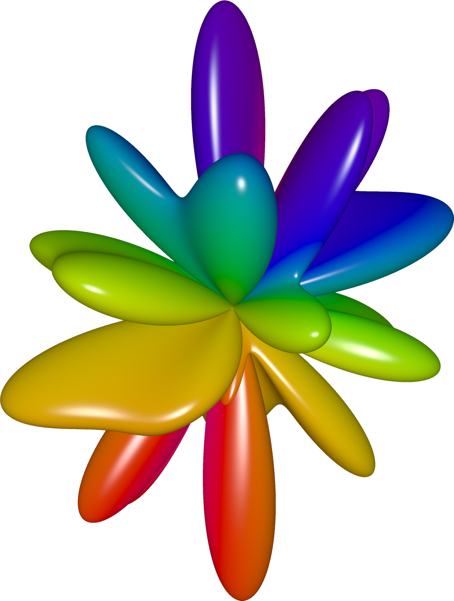
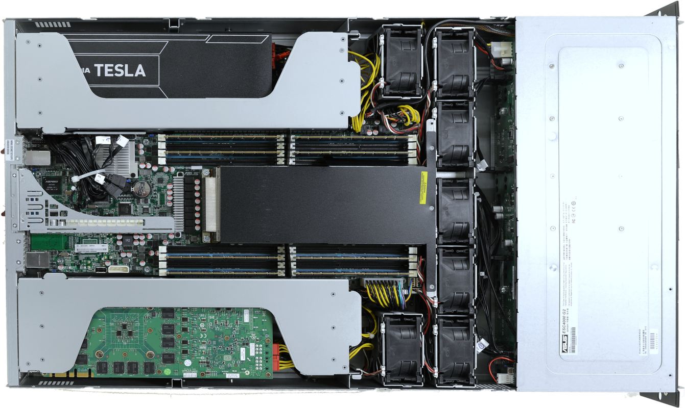
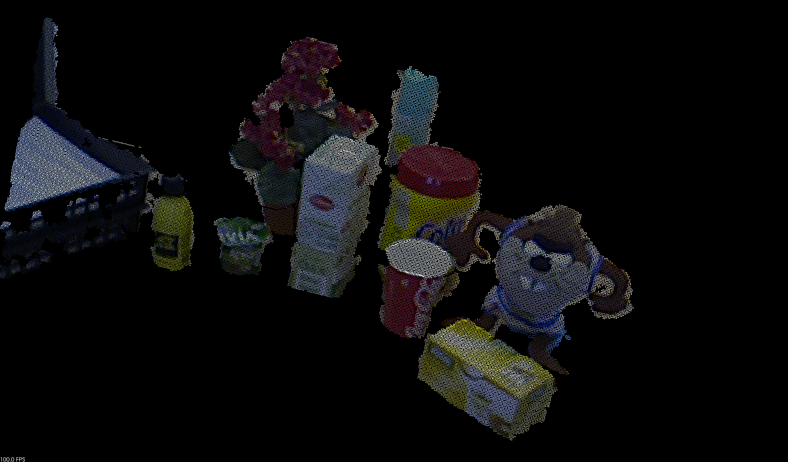
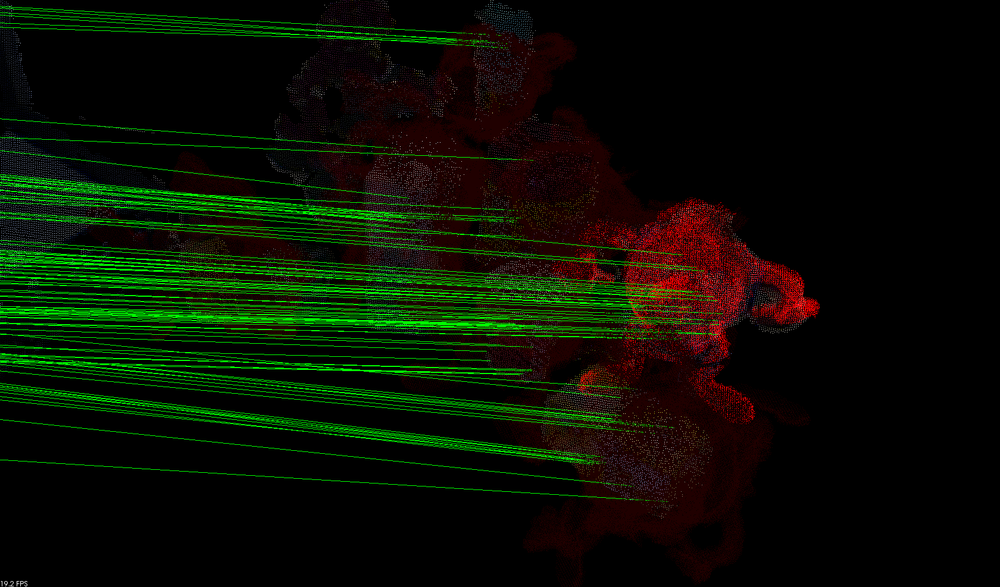
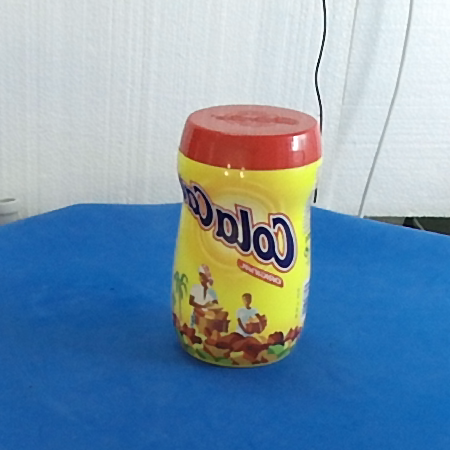

Research
Experience
-
June 2016 - October 2016
Machine Learning Software Intern
- NVIDIA Corporation, Santa Clara Headquarters
- Worked on efficient background removal or foreground segmentation using deep architectures with Caffe and also on synthetic dataset augmentation techniques for self-driving cars. I was embedded in the Mobile Visual Computing group at NVIDIA Research lead by Jan Kautz, and the Camera/Algorithms team lead by Howard Waterfall. The internship was mentored by Shalini De Mello from NVIDIA Research.
-
November 2015 - June 2016
Technician/Research Assistant
- University Institute for Computer Research, University of Alicante
- Worked on the SIRMAVED national project (DPI2013-40534-R). We developed a C++/Qt rehabilitation application, for people with acquired brain damage, using multiple sensors: Kinect V2, Leap Motion, and Tobii Eye X.
-
July 2015 - August 2015
PRACE Summer of High Performance Computing Student
- Jülich Supercomputing Centre, Forschungszentrum Jülich
- Worked on parallel and high performance computing on GPU clusters. The goal was to accelerate, using CUDA, certain parts of the Fast Multipole Method (FMM) used to speed up the calculation of long-range forces in the N-body problem. The work was supervised by Ivo Kabadshow and Andreas Beckmann from the Institute of Advanced Simulaton (IAS) of the Jülich Supercomputing Centre (JSC).
-
September 2014 - June 2015
Research Internship
- Department of Computer Technology, University of Alicante
- Worked on 3D vision algorithms related to human-machine interaction and object recognition under time constraints using technologies like Kinect 2.0 and CUDA with the Jetson TK1 platform. The research was performed under the direction of José García-Rodríguez and Sergio Orts-Escolano from the Department of Computer Technology and Computation (DTIC).
-
January 2014 - June 2014
Research Internship
- Department of Computer Technology, University of Alicante
- Worked on computer vision and computational geometry algorithms. Our efforts were directed towards the development of an accelerated variant of the Iterative Closest Point method. The research was performend under the supervision of Higinio Mora-Mora and Jerónimo Pascual-Mora from the Department of Computer Technology and Computation (DTIC).
Projects
I am interested in Machine Learning and 3D Computer Vision. In particular, Object Recognition, Human-Computer Interaction, Robotics, Parallel Computing on GPUs and High Performance Computing. Some of my past research projects were focused on:
Fast Multipole Method (FMM) on GPUs


Real-time 3D Object Recognition


3D Object Reconstruction



Real-time 3D Object Recognition
3D Object Reconstruction